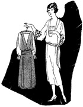
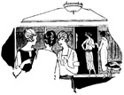

1926—The New-Way Course in Fashionable Clothes-Making
Lesson 53—Selecting Employees
Selecting Salespeople
When you first open your shop, you will probably not need any salespeople, as you will be able to attend to the sales yourself—unless, of course, you contemplate opening an extremely large shop. But sometime or other, when your shop progresses and your patronage becomes large, it will become necessary for you to employ salespeople. And it is best that you know now, right from the start, what the requirements for good salespeople are.
To employ haphazard workers or indifferent salespeople is poor economy. Many customers will leave unsatisfied and will not return to the shop again, if the sales person is discourteous, indifferent. Always be sure that the women you select to wait on your customers are cheerful in disposition. A cheerful salesperson always makes a good impression on the customer, while a grouchy, discourteous salesperson will turn away more customers than you can afford to lose. You should also choose, if possible, women who are interested in clothes and in good style—women who will enjoy selling dresses that are individually becoming—women who will take a personal interest in the customers.
A cheerful, tactful, pleasant salesperson is much to be preferred to a skilled but discourteous one. In fact, for this reason it is sometimes wise to select young girls without a great deal of experience, for then they can be trained to adapt themselves to your requirements.
Concerning Their Dress
Of extreme importance is the dress of the people who welcome the customers to your shop and sell them gowns. Salespeople should always be neatly and attractively dressed, but under no circumstances should they be gaudy in appearance. They should show by the good taste of their own clothes that they know what is correct and becoming for the customer.
The clothes that salespeople wear should also be seasonable. In the summer, cool linens are appropriate. Dark-colored silk frocks are nice in the cooler months, and cloth dresses that are smart without being extreme are always in good form. A woman of good taste will not want to purchase a gown from another woman whose clothes indicate that she herself knows very little regarding what is correct and appropriate.
Very often, a customer will request a salesperson to hold a dress in front of her, so that she (the customer) can step back a little and view the effect. Of course the salesperson should comply with the request courteously. And she should strive to create as pleasing and attractive an effect as possible, by concealing her own frock and draping up the one on display in the most effective manner.
Salespeople often try to force upon a customer that which she does not wish to purchase. If she is led to believe that she is being forced into buying something she doesn't want, the customer is very likely to resent the attitude of the shop and walk out without purchasing anything whatever. On the other hand, if the sales person finds that the customer does not want the dress she has shown her, and she places them aside without attempting to force a sale, the customer will very likely ask to be shown other styles—for no one likes to walk out of a shop without purchasing. This is the opportunity to bring out something new, something smart, something the salesperson feels is particularly suited to the customer. If she talks as she should, without impatience or annoyance, she will no doubt make the sale.
The shop owner herself should be the best salesperson in the shop. She should be a source of inspiration to the others. Her manner, her sincere interest in each customer, her constant courtesy and poise should be an example to those who take her place when she cannot be there.
The Other Workers
To enable her to give the best thought and attention to her business, many dressmakers who open shops of their own employ one or more girls or women to do the details of sewing. In this way, they not only have their time and strength for other more important duties, but they are able to turn out more dresses in less time.
It is important that the room in which the work is done be kept quiet. Noisy confusion is not compatible with good work. Happy, contented workers produce the best results, and who can be happy in noisy, confused surroundings? Crisp curtains at the windows, comfortable chairs, plenty of light and fresh air aid materially in inspiring the workers to do the best they possibly can.
By taking a personal interest in her workers and trying to help them in every way possible, the shop owner will get the best results. The worker will take a personal interest in the shop, will want to do the best of which she is capable, will show her appreciation by a willingness to serve. The attitude of the employer very often determines the attitude of the employee—and the shop owner will do well to put herself into the place of her workers occasionally and see whether she is treating them as she herself would like to be treated.
Besides the salespeople and the women who help her with the sewing, the shop owner may need an errand boy or girl to deliver the dresses to the customers. Very often, a young girl who is eager to learn the dressmaking business will take this position at a very low wage in order to be able to practice sewing when she is not busy. Whether you employ a girl or boy to deliver dresses depends upon the requirements of your business.